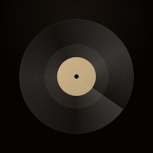
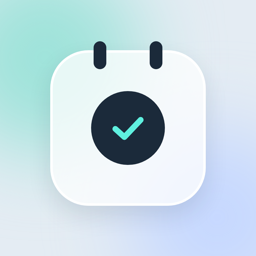

갈피
독서 기록읽은 책과 마음에 남은 문장을 모아 둬요. 바코드로 책을 찾아 담고, 읽은 날짜와 진도를 남기고, 한 해 동안 읽은 책을 통계로 돌아봐요.
읽은 것, 본 것, 다녀온 곳, 지낸 하루.
매일 꺼내 쓰는 작은 앱을 만듭니다.
혼자 만드는 앱 스튜디오예요. 기록이 쌓일수록 다시 보는 재미가 생기도록, 쓰기는 가볍고 돌아보기는 즐겁게 만들고 있어요.
앱 10개 출시
읽은 책과 마음에 남은 문장을 모아 둬요. 바코드로 책을 찾아 담고, 읽은 날짜와 진도를 남기고, 한 해 동안 읽은 책을 통계로 돌아봐요.
다녀온 여행을 사진으로 정리해요. 사진을 고르면 날짜와 장소별로 여행이 만들어지고, 다녀온 나라는 지도에 채워져요. 경비와 예약, 가고 싶은 곳도 한곳에 모아요.
영화·공연·전시를 본 날을 티켓처럼 모아요. 장소와 좌석, 별점과 한 줄 감상을 남기고 포스터와 함께 다시 봐요.

갖고 있는 LP와 CD를 바코드나 검색으로 담아 한눈에 정리해요. 판을 걸 때마다 들은 면과 별점, 감상을 남기고 취향을 통계로 돌아봐요.
쓴 돈만 적으면 누가 누구에게 얼마를 보내면 되는지 계산해요. 송금 횟수를 줄이고 보내기 쉬운 금액으로 맞춰, 결과는 앱 없이 열리는 링크로 나눠요.

음식 유통기한, 화장품 사용기한, 필터 교체 주기, 여권 만료일처럼 언젠가 끝나는 것들을 모아 두고 때가 되면 알려 줘요. 가족과 공간을 나눠 함께 챙겨요.
오늘 있었던 일을 낱장으로 적어요. 기분과 날씨를 고르고, 문장 옆에 스티커를 붙이고, 쌓인 날들을 다시 꺼내 봐요.
기다리는 날과 기억할 날을 세어 줘요. 홈 화면 위젯으로 남은 날을 보고, 그날이 오면 알림으로 알려 줘요.
한자능력검정시험 같은 급수 시험을 준비해요. 기관과 목표 급수, 시험일을 고르면 하루 공부량을 나눠 주고, 카드 복습과 획순 쓰기, 실전 모의고사로 합격까지 이어 가요.
계정을 만들고 싶지 않은 분을 위해 남겨 둔 독서 기록 앱이에요. 로그인 없이 쓰고, 기록은 이 폰에만 남아요.
앱마다 달라요. 갈피·티킵·바이닐·딱정산·제때는 로그인해서 쓰기 때문에 같은 계정으로 로그인하면 그대로 따라와요. 데이노트는 로그인 없이 쓰는 대신 iCloud·구글 드라이브에 백업해 두고 새 기기에서 가져와요. 틸데이·데일리북 Pro는 기록이 이 기기에만 저장되니, 백업 파일을 만들어 새 기기에서 불러와 주세요. 급수한자는 로그인 없이 바로 쓰고, 나중에 로그인하면 공부 기록이 계정에 함께 저장돼 새 기기에서 이어져요. 트리플리는 로그인하면 여행 기록이 계정에 저장돼 새 기기에서 이어지고, 사진은 휴대폰에만 남아 새 기기의 사진으로 다시 찾아 보여 줘요.
로그인해서 쓰는 앱에서 탈퇴하면 그 앱의 기록이 서버에서 지워져요. 결제 내역처럼 법으로 보관해야 하는 것만 남아요. 로그인이 없는 앱은 앱을 지우면 기록도 함께 사라지니 백업을 먼저 해 두세요.
주소를 아는 사람만 볼 수 있고, 기본 30일이 지나면 만료돼요. 계좌번호는 만든 사람이 켰을 때만 담겨요.
아래 메일이나 카카오톡으로 보내 주세요. 앱 안에서도 문의할 수 있어요.